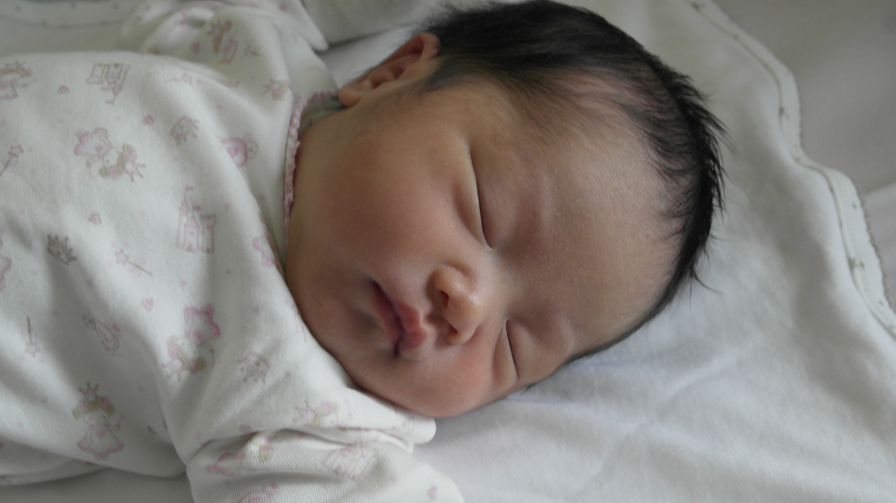
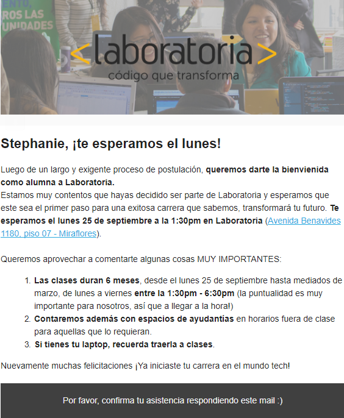

-
Hello, World!
02 de Junio de 1987Un Martes a las 08:15 a.m. llegué a este mundo con 3,5 kilos. Soy la segunda hija, mi hermana mayor es 1 año, 2 meses, y 3 días mayor que yo.

-
Colegio Peruano Chino Diez de Octubre
1993 - 1998Mi papá siempre anhelo que tuviéramos más integración con la colonia china, ya que mi abuelo vino de Cantón desde muy joven pero perdió todo contacto con sus familiares en China cuando éste falleció.
El colegio era espectacular, tenía una variedad increíble de animales y espacios abiertos donde podíamos jugar; aunque pase por momentos de todo tipo, considero que cultive buenas amistades en ese lugar. -
Trilce
1999 - 2003Salir del Colegio Chino fue duro para mí, extrañaba a mis amigos pero mis padres ya no podían costear las altas mensualidades. Aún así, en Trilce estudiaba hasta las 06:00 de la tarde, todos los días por las asesorías ya que la meta de mis padres era que ingrese a una buena universidad.
En ese tiempo, mi interés principal era dibujar, escribir novelas y publicarlas en foros; creo que era buena en ello, tenía muchos seguidores que me pedían que siga escribiendo porque mis historias eran muy interesantes. -
¿Quiero estudiar Estomatología?
2005 - 2006No sé como nació la idea, pero al estar en 4to ciclo me tuve que retirar porque no podía seguir pagando las pensiones y en una clase de moldeado podía gastarme más de S/200. Fue triste, pero gané una buena experiencia universitaria.
En ese lapso de tiempo, ingresé a trabajar a Telemark como teleoperadora. -
05 de Abril de 2007
300Después de dos años de conocerlo, mi mejor amigo me cito una hora antes de ver la película 300 y me pidió ser su enamorada.
-
Necesito una carrera
2011Ingresé a Xerox como analista de capacitación, aunque no me lo exigieron decidí que sería bueno estudiar y fue así como ingresé a ISIL, donde estudié Administración de Empresas.
-
Pedida de Mano
05 de Abril de 2014Siempre pensé que no me podrían sorprender pero estaba equivocada. Hubo cantos, coreografías, fuegos artificiales y más.
-
Tan Tan Ta Tan!!
11 Abril de 2015Luego de 8 años, me casé con mi mejor amigo y el amor de mi vida. Fue una boda muy especial, cantamos a duo, hicimos nuestros propios pactos y nos olvidamos llevar la maleta al hotel.
-
Dos líneas Verticales
11 Mayo de 2015¡Primer mes de casados! Estuve a punto de levantar mi queja por el lomo saltado malogrado, cuando mi esposo me pidió hacerme una prueba.
Miré por el rabillo del ojo mientras esperábamos, estaba segura que iba a salir negativo. Así que le dije que mirara primero, dijo que salieron dos líneas y le grite: ¡Ja! ¡Mentiroso! Luego me la enseñó y hasta el día de hoy no me la creo. -
Jehová ha sido misericordioso
18 Diciembre de 2015Me convertí en mamá, fue el día mas feliz de mi vida sin lugar a dudas,tener una vida fruto del amor que tengo con mi amado esposo es un regalo de Dios.
 -
¡Felicitaciones Stephanie!
20 Septiembre de 2017No quería sobre ilusionarme, una parte de mí estaba segura que iba a entrar pero la otra me decía que debo tomar las cosas calmadas. Cuando vi el correo solo atiné a abrazar a mi esposo e hija y a gritar de la emoción. Sabía que no iba a ser fácil, no es fácil pero estoy aquí y no me rendiré hasta ser la mejor versión de mí.
